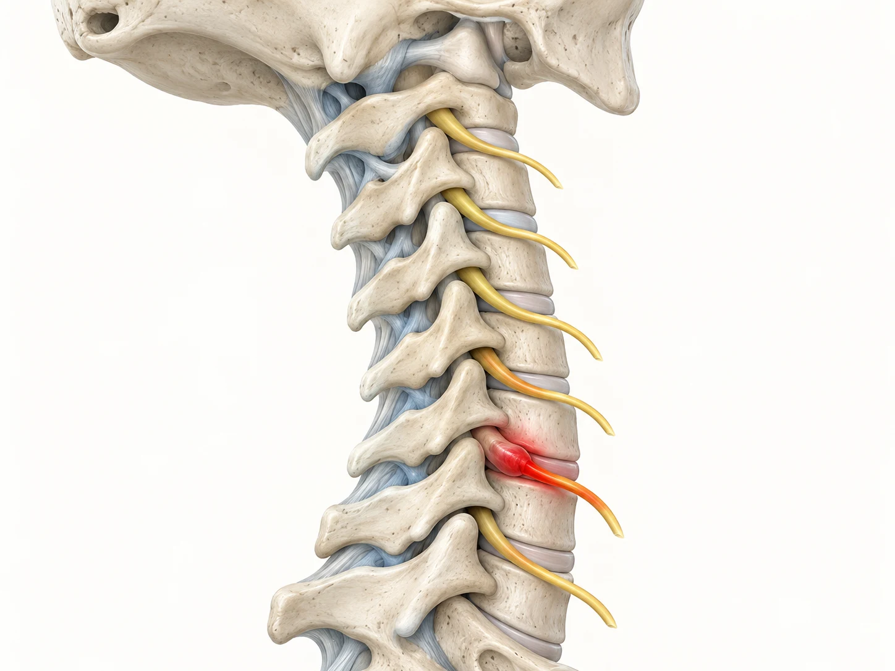
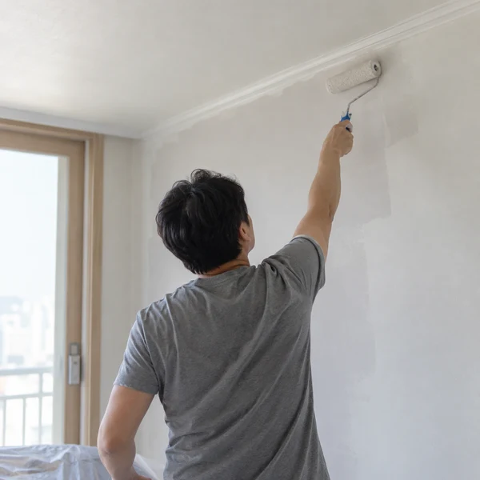
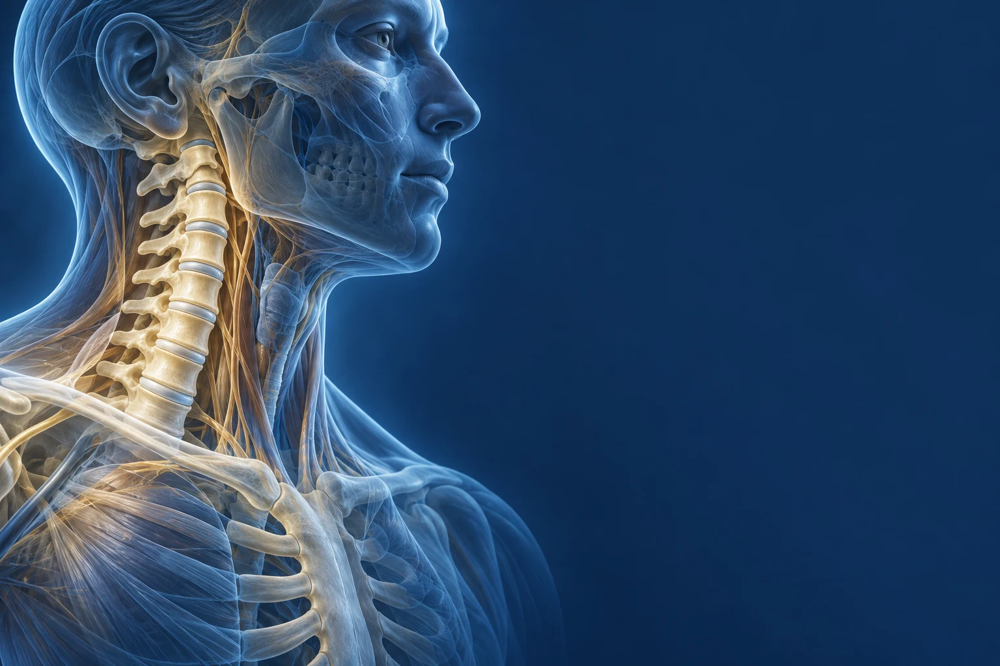
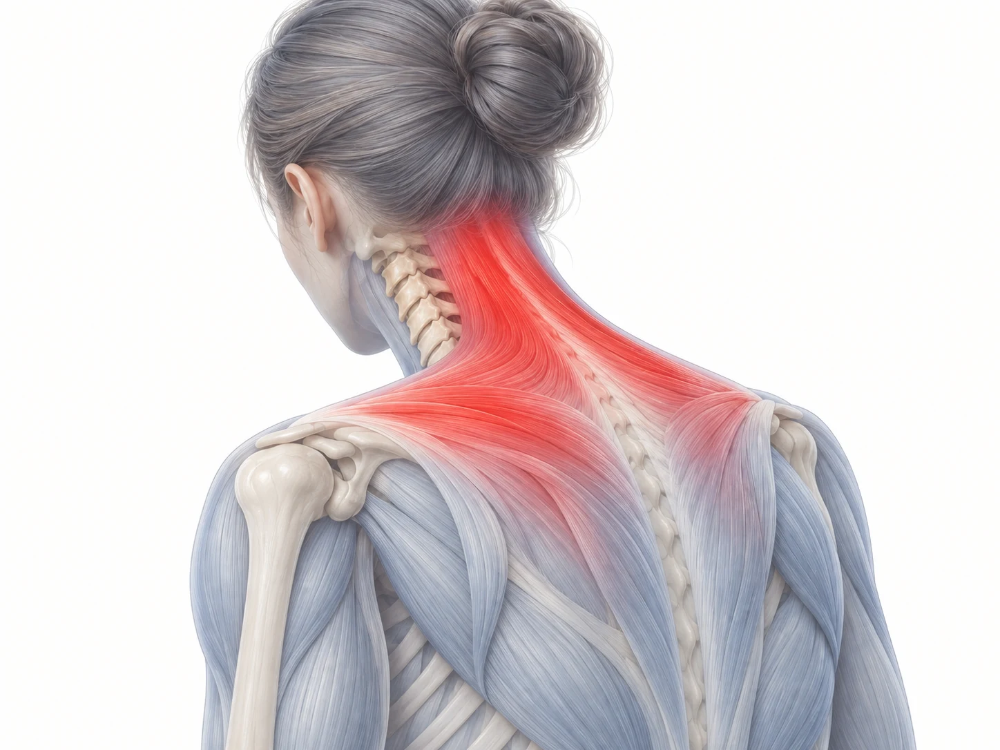
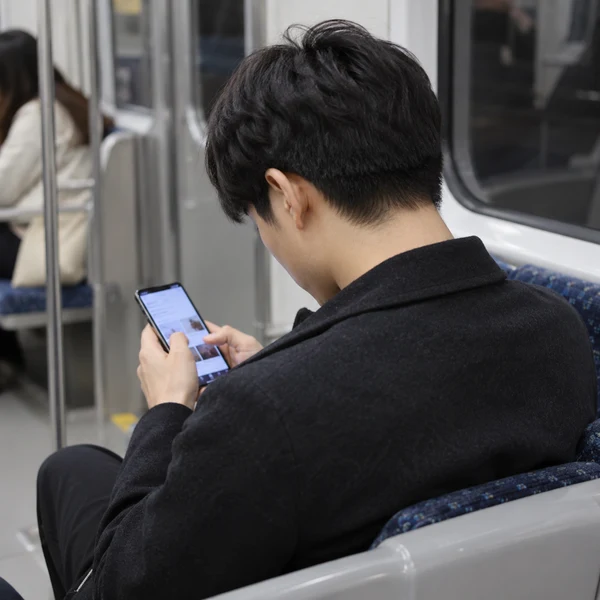
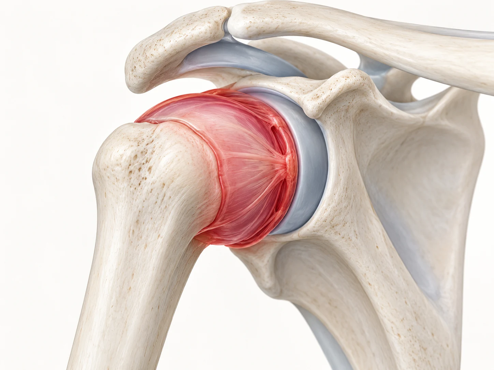
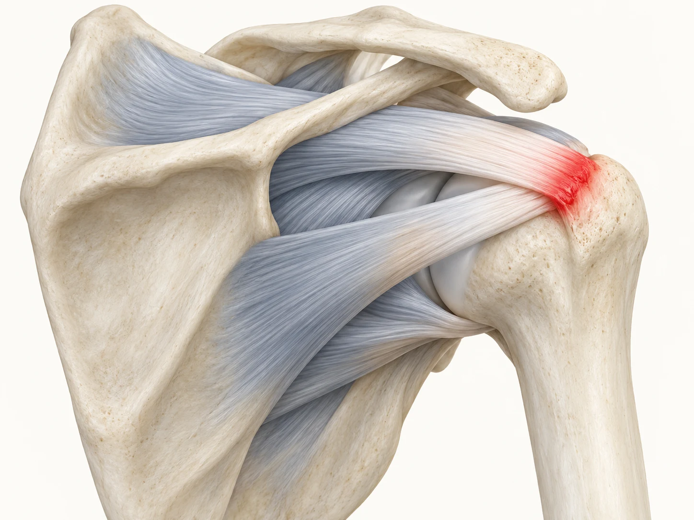
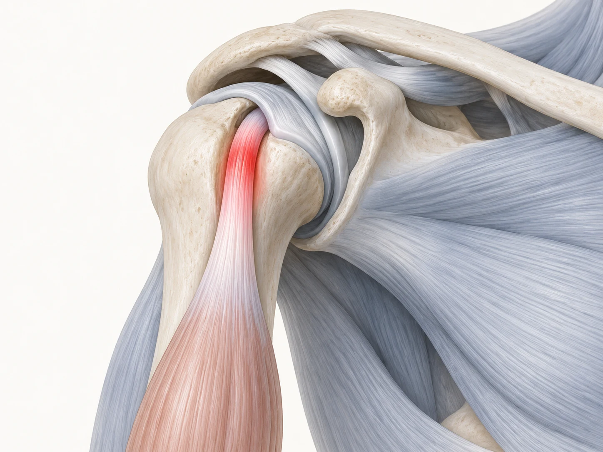
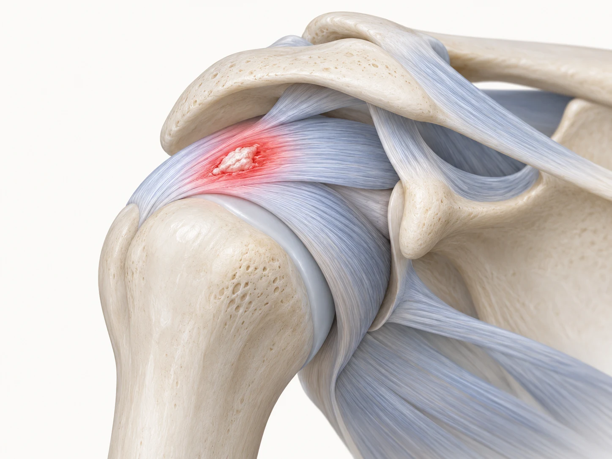
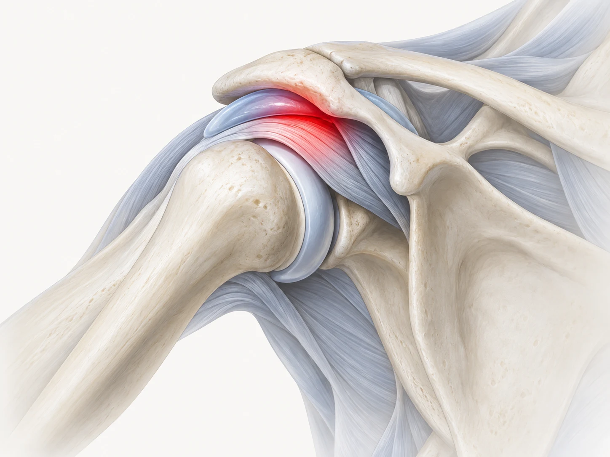

통증의 원인을 더 깊이 찾아가는 진료
“목과 어깨 통증은 오래 유지한 자세, 근육의 긴장,힘줄이나 신경의 문제 등 여러 원인으로 나타납니다.
통증이 시작된 시점과 팔을 움직일 때의 불편, 저림 여부 등을 함께
살펴봅니다.”
ABOUT THE CONDITION
목디스크(경추 추간판 탈출증)
목뼈 사이에서 충격을 흡수하는 디스크가 밀려나 신경을 자극하는 질환입니다.

목디스크의 원인
나이가 들며 디스크가 약해지거나 갑작스러운 손상으로 디스크가 밀려나 신경을 자극할 수 있습니다.
목에 부담을 주는 생활
동작도
함께 살펴봅니다.

노화에 따른 목 디스크의 탄력 저하

무거운 물건을 드는 동작에서 생기는 목 부담

갑작스럽게 목을 비트는 동작이나 외상

반복적인 목 움직임과 누적되는 부담

SYMPTOMS
목디스크 대표 증상
- 01
목에서 어깨와 팔로 이어지는 찌릿한 통증
- 02
팔이나 손가락의 저림과 감각 둔화
- 03
고개를 돌리거나 뒤로 젖힐 때 심해지는 통증
- 04
손이나 팔의 힘이 약해져 물건을 들기 어려움
목디스크의 진단
목의 움직임에 따른 통증과 어깨·팔·손으로 이어지는 저림을 확인합니다. 근력과 감각을 살펴 신경 자극 여부를 평가하고 필요한 검사를 판단합니다.

문진·신체검진
통증이 시작된 시점과 양상, 병력과 생활 습관을 확인합니다. 압통과 움직임, 근력·감각 등을 함께 살펴 진단의 방향을 정합니다.

X-ray
뼈의 정렬과 관절 간격, 퇴행성 변화 등을 확인하는 검사입니다. 진찰 결과에 따라 촬영하여 골절이나 다른 뼈·관절 문제를 살펴봅니다.
검사는 증상과 진찰 결과에 따라 필요한 항목을 선택합니다.
ABOUT THE CONDITION
거북목·일자목 증후군
거북목은 머리가 몸통보다 앞으로 나온 자세를, 일자목은 목뼈의 곡선이 줄어든 상태를 말합니다.

거북목·일자목 증후군의 원인
고개를 앞으로 내밀거나 오래 숙이는 생활 습관이 목에 부담을 줄 수 있습니다. 수면 자세와 목·어깨 근육의 긴장도 함께 살펴봅니다.

장시간 모니터를 향해 고개를 앞으로 빼는 자세

스마트폰을 고개 숙여 오래 바라보는 습관

수면 시 자신의 체형에 맞지 않는 높은 베개 사용

목과 어깨 주변 근육의 불균형 및 만성 긴장
SYMPTOMS
거북목·일자목 증후군 대표 증상
- 01
목 뒤쪽과 어깨 라인이 항상 뻐근하고 묵직한 통증
- 02
목을 뒤로 젖히거나 옆으로 돌릴 때 뻣뻣한 느낌
- 03
만성 뒷머리 두통 및 눈의 피로감
- 04
어깨와 등 뒤쪽까지 뻐근함이 이어지며 쉽게 피로해짐
- 05
자고 일어나도 목 부위가 찌뿌둥하고 깔끔하지 않음
거북목·일자목 증후군의 진단
평소 화면을 보는 자세와 목·어깨의 긴장 상태를 확인합니다. 목의 정렬과 움직임을 함께 살펴 불편함의 원인을 평가합니다.
문진·신체검진
통증이 시작된 시점과 양상, 병력과 생활 습관을 확인합니다. 압통과 움직임, 근력·감각 등을 함께 살펴 진단의 방향을 정합니다.

움직임·기능 평가
아픈 부위를 누르거나 움직일 때의 반응을 확인합니다. 관절의 움직임 범위와 근력, 일상 동작에서 나타나는 불편함을 함께 평가합니다.
X-ray
뼈의 정렬과 관절 간격, 퇴행성 변화 등을 확인하는 검사입니다. 진찰 결과에 따라 촬영하여 골절이나 다른 뼈·관절 문제를 살펴봅니다.
검사는 증상과 진찰 결과에 따라 필요한 항목을 선택합니다.
ABOUT THE CONDITION
오십견(유착성 관절낭염)
어깨 관절을 감싸는 관절낭이 두꺼워지고 뻣뻣해져 움직임이 제한되는 질환입니다.

오십견의 원인
어깨 관절의 노화와 부상 후 움직임 감소 등이 관련될 수 있습니다. 당뇨병·갑상선 질환과 같은 전신적 요인도 영향을 줄 수 있습니다.

어깨 관절 부위의 노화로 인한 퇴행성 변화

어깨 부상(외상) 후 오랫동안 어깨를 고정하거나 쓰지 않은 경우

어깨 관절의 반복적인 과사용 또는 반대로 극심한 운동 부족

당뇨병, 갑상선 질환 등 전신 대사 질환의 영향
SYMPTOMS
오십견 대표 증상
- 01
팔을 위로 올리거나 등 뒤로 돌리는 동작이 매우 어려움
- 02
머리를 감거나 옷을 입고 벗는 등 일상적인 동작의 제한
- 03
밤만 되면 어깨 통증이 더 심해져 잠을 이루기 힘듦 (야간통)
- 04
바깥쪽에서 다른 사람의 도움으로 팔을 움직여도 제한되는 가동 범위
- 05
어깨 전체가 바늘로 찌르듯 쑤시고 저린 통증 지속
오십견의 진단
스스로 팔을 움직일 때와 도움을 받아 움직일 때의 범위를 비교합니다. 어깨가 굳은 정도와 통증 양상을 살펴 다른 어깨 질환과 구분합니다.
문진·신체검진
통증이 시작된 시점과 양상, 병력과 생활 습관을 확인합니다. 압통과 움직임, 근력·감각 등을 함께 살펴 진단의 방향을 정합니다.
움직임·기능 평가
아픈 부위를 누르거나 움직일 때의 반응을 확인합니다. 관절의 움직임 범위와 근력, 일상 동작에서 나타나는 불편함을 함께 평가합니다.
X-ray
뼈의 정렬과 관절 간격, 퇴행성 변화 등을 확인하는 검사입니다. 진찰 결과에 따라 촬영하여 골절이나 다른 뼈·관절 문제를 살펴봅니다.

초음파검사
초음파로 힘줄과 인대 등 연부 조직을 살펴봅니다. 통증 부위의 염증·부종이나 움직임에 따른 변화를 확인할 필요가 있을 때 활용합니다.
검사는 증상과 진찰 결과에 따라 필요한 항목을 선택합니다.
ABOUT THE CONDITION
회전근개 질환(건염·파열)
팔을 들어 올리고 돌리는 데 관여하는 회전근개 힘줄에 염증이나 파열이 생긴 상태입니다.

회전근개 질환의 원인
반복적인 어깨 사용과 힘줄의 퇴행성 변화가 주요 요인입니다.
운동이나 낙상으로 받은 충격이 힘줄 손상으로 이어질 수도
있습니다.
팔을 자주 들어 올리는 작업과 반복 동작

노화에 따른 힘줄의 퇴행성 변화
골프·테니스·수영 등 어깨를 많이 쓰는 운동
넘어지거나 부딪히면서 받은 갑작스러운 충격
SYMPTOMS
회전근개 질환 대표 증상
- 01
팔을 들 때 특정 각도에서 찌르는 듯한 통증
- 02
팔을 올렸다가 힘이 빠져 툭 떨어지는 증상
- 03
어깨를 움직일 때 내부에서 삐걱거리거나 걸리는 마찰음 발생
- 04
통증이 있는 어깨 쪽으로 누워서 자기 어려움
- 05
어깨 삼각근(옆쪽 팔) 부위까지 이어지는 방사통
다친 뒤 갑자기 팔을 들기 어려워졌다면 빠른 진료가 필요합니다.
회전근개 질환의 진단
팔을 들어 올릴 때의 통증과 근력 저하를 확인합니다.
어깨 움직임을 평가하고 필요한 경우 힘줄의 상태와 손상 범위를
검사합니다.
문진·신체검진
통증이 시작된 시점과 양상, 병력과 생활 습관을 확인합니다. 압통과 움직임, 근력·감각 등을 함께 살펴 진단의 방향을 정합니다.
움직임·기능 평가
아픈 부위를 누르거나 움직일 때의 반응을 확인합니다. 관절의 움직임 범위와 근력, 일상 동작에서 나타나는 불편함을 함께 평가합니다.
X-ray
뼈의 정렬과 관절 간격, 퇴행성 변화 등을 확인하는 검사입니다. 진찰 결과에 따라 촬영하여 골절이나 다른 뼈·관절 문제를 살펴봅니다.
초음파검사
초음파로 힘줄과 인대 등 연부 조직을 살펴봅니다. 통증 부위의 염증·부종이나 움직임에 따른 변화를 확인할 필요가 있을 때 활용합니다.
검사는 증상과 진찰 결과에 따라 필요한 항목을 선택합니다.
ABOUT THE CONDITION
상완이두근건염
팔을 들어 올리거나 물건을 들 때 어깨 앞쪽에 통증이 나타나며, 해당 부위를 누를 때 아플 수 있습니다.

상완이두근건염의 원인
팔을 들어 올리거나 무거운 물건을 드는 동작이 반복되면 힘줄에 부담이 쌓입니다. 회전근개 질환 등 다른 어깨 문제와 함께 나타나기도 합니다.

무거운 물건을 반복해서 들어 올리는 작업

덤벨·수영 등 팔을 위·앞으로 많이 쓰는 운동
회전근개 질환이나 충돌증후군에 동반되는 힘줄 자극

준비 운동 없이 갑자기 어깨와 팔에 힘을 쓰는 경우
SYMPTOMS
상완이두근건염 대표 증상
- 01
어깨 앞쪽 푹 들어간 부위를 누르면 찌릿한 뚜렷한 압통
- 02
팔을 위로 올리거나 뒤로 젖힐 때 어깨 앞쪽이 쑤심
- 03
물건을 들거나 쥐는 힘을 줄 때 어깨 전방 통증 가중
- 04
어깨 앞쪽에서 뭔가가 튕기거나 걸리는 듯한 느낌
- 05
통증이 팔 앞쪽(알통 부위)을 따라 아래로 내려가는 양상
상완이두근건염의 진단
어깨 앞쪽의 압통과 팔을 들거나 힘을 줄 때의 통증을 확인합니다. 상완이두근 힘줄과 주변 어깨 조직의 상태를 함께 살펴봅니다.
문진·신체검진
통증이 시작된 시점과 양상, 병력과 생활 습관을 확인합니다. 압통과 움직임, 근력·감각 등을 함께 살펴 진단의 방향을 정합니다.
움직임·기능 평가
아픈 부위를 누르거나 움직일 때의 반응을 확인합니다. 관절의 움직임 범위와 근력, 일상 동작에서 나타나는 불편함을 함께 평가합니다.
X-ray
뼈의 정렬과 관절 간격, 퇴행성 변화 등을 확인하는 검사입니다. 진찰 결과에 따라 촬영하여 골절이나 다른 뼈·관절 문제를 살펴봅니다.
초음파검사
초음파로 힘줄과 인대 등 연부 조직을 살펴봅니다. 통증 부위의 염증·부종이나 움직임에 따른 변화를 확인할 필요가 있을 때 활용합니다.
검사는 증상과 진찰 결과에 따라 필요한 항목을 선택합니다.
ABOUT THE CONDITION
석회성 건염
어깨 힘줄 안에 칼슘 성분이 쌓이는 질환으로, 주로 회전근개에서 발생합니다.

석회성 건염의 원인
힘줄 안에 석회가 쌓여 통증을 일으키지만, 석회가 생기는 정확한 이유는 명확하지 않습니다. 아래는 관련 요인과 통증이 두드러질 수 있는 일상 상황입니다.
중년기에 비교적 흔하게 나타나는 힘줄 변화
여성에게 상대적으로 더 흔한 발생 경향
팔을 들어 올릴 때 자극되는 어깨 통증
아픈 어깨로 눕거나 잠잘 때 심해지는 통증
SYMPTOMS
석회성 건염 대표 증상
- 01
갑자기 시작되는 심한 어깨 통증과 뻣뻣함
- 02
팔을 움직이거나 들어 올리기 어려움
- 03
밤에 통증이 심해져 잠을 이루기 힘듦
- 04
어깨 주변을 누를 때 느껴지는 압통
석회성 건염의 진단
갑자기 심해진 어깨 통증과 움직임 제한을 확인합니다. 영상검사가 필요한 경우 석회의 위치와 주변 힘줄의 상태를 함께 평가합니다.
문진·신체검진
통증이 시작된 시점과 양상, 병력과 생활 습관을 확인합니다. 압통과 움직임, 근력·감각 등을 함께 살펴 진단의 방향을 정합니다.
움직임·기능 평가
아픈 부위를 누르거나 움직일 때의 반응을 확인합니다. 관절의 움직임 범위와 근력, 일상 동작에서 나타나는 불편함을 함께 평가합니다.
X-ray
뼈의 정렬과 관절 간격, 퇴행성 변화 등을 확인하는 검사입니다. 진찰 결과에 따라 촬영하여 골절이나 다른 뼈·관절 문제를 살펴봅니다.
초음파검사
초음파로 힘줄과 인대 등 연부 조직을 살펴봅니다. 통증 부위의 염증·부종이나 움직임에 따른 변화를 확인할 필요가 있을 때 활용합니다.
검사는 증상과 진찰 결과에 따라 필요한 항목을 선택합니다.
ABOUT THE CONDITION
어깨 충돌증후군
팔을 들 때 어깨 위쪽 공간의 힘줄과 점액낭이 자극을 받아 통증이 생기는 상태입니다.

어깨 충돌증후군의 원인
팔을 들어 올릴 때 어깨뼈 아래의 힘줄과 점액낭이 자극받아 통증이 나타날 수 있습니다. 반복적인 사용과 주변 조직의 변화를 함께 살펴봅니다.
머리 위로 팔을 자주 올리는 작업

수영·테니스 등 반복적인 어깨 사용
나이가 들며 나타나는 힘줄의 퇴행성 변화
어깨 힘줄과 점액낭의 붓기 및 자극
SYMPTOMS
어깨 충돌증후군 대표 증상
- 01
팔을 올릴 때 어깨 앞쪽이나 바깥쪽에 나타나는 통증
- 02
특정 각도에서 걸리거나 찌르는 듯한 느낌
- 03
높은 선반의 물건을 꺼내거나 옷을 입을 때 불편함
- 04
아픈 어깨 쪽으로 누우면 심해지는 야간 통증
어깨 충돌증후군의 진단
팔을 올리는 각도에 따라 통증이 생기는지 확인합니다. 어깨의 움직임과 근력을 살펴 힘줄·점액낭의 자극 여부를 평가합니다.
문진·신체검진
통증이 시작된 시점과 양상, 병력과 생활 습관을 확인합니다. 압통과 움직임, 근력·감각 등을 함께 살펴 진단의 방향을 정합니다.
움직임·기능 평가
아픈 부위를 누르거나 움직일 때의 반응을 확인합니다. 관절의 움직임 범위와 근력, 일상 동작에서 나타나는 불편함을 함께 평가합니다.
X-ray
뼈의 정렬과 관절 간격, 퇴행성 변화 등을 확인하는 검사입니다. 진찰 결과에 따라 촬영하여 골절이나 다른 뼈·관절 문제를 살펴봅니다.
초음파검사
초음파로 힘줄과 인대 등 연부 조직을 살펴봅니다. 통증 부위의 염증·부종이나 움직임에 따른 변화를 확인할 필요가 있을 때 활용합니다.
검사는 증상과 진찰 결과에 따라 필요한 항목을 선택합니다.
TREATMENT
회복을 위한 치료 프로그램
환자의 상태에 따라 필요한 치료를 판단합니다.